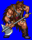
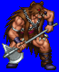
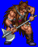
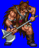

Height: 160-180 cm Weight: 150-220 lbs.
Habitat: Battlefield Origin: Northern Europe
Meaning: From the old European "berserkr" which means "he who dons the bear's fur"
Legends about the "furious soldiers" of old northern Europe tell of brave warriors who used a form of self-hypnosis to achieve a state such that they could perform well beyond the abilities of the average soldier in battle. Methods of self-suggestion included wearing bear's fur as clothing, eating certain foods, listening to inspiring battle hymns, and even using hallucinogenic herbs to heighten their bloodlust. After battle, these warriors enter a comatose state and don't recover quickly. In games, berserkers usually appear as enemies, but can appear as allies as well.